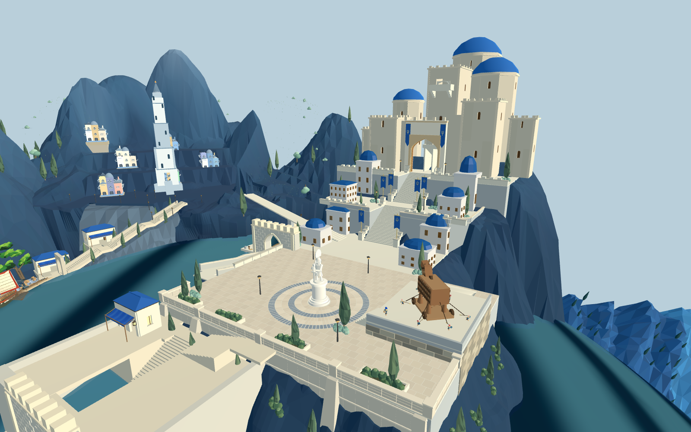
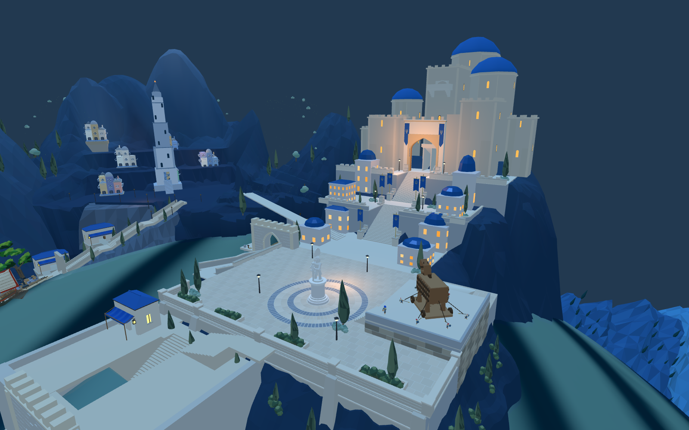

认可目标

这是候选检查，尚未替换8931默认游戏或Godot普通场景。旧城原建筑单元329→133，分为七组，原WFC求解均无未解决项。原中央塔、雕像、木马和主堡通路引用保留。

主要差距：旧城建筑群仍孤立，个别台基高4.78米；新城主堡缺少连贯体量，前港仍是过大的方形占位；旧植被和灯光有悬浮。不能据此判定达到目标。

已重新导入并通过测试装配隐藏原地块、原前港，安装同一候选。原雕像与木马坐标检查通过，广场铺装5323三角形，原15点路线入口加载通过。这不是完整路线行走或战斗验证；两端昼夜与材质还未统一。
